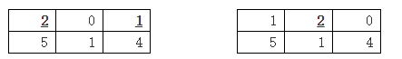

Magic Land 上的时间又过了若干世纪……
现在，人们谈论着一个传说：从前，他们的祖先来到了一个位于东方的岛屿，那里简直就是另外一个世界。善于分析与构造的 Magic Land 上的人们总是不明白那里的人们是如何不借助精确的实验与计算驱动和操纵魔法。
偶然地，一个魔法使（Magician）来到了 Magic Land，在临走的时候留下了一个神奇的盒子，叫做星器（Casket of star）。
虽然不知道这个盒子是做什么的，但是经过了大量的实验和计算后，人们已经清楚它的一些事实：
这样，我们可以用一个 $N×M$的数表来表示星器的状态，比如 $N=2$，$M=3$ 时：

当星器为左图的状态时，通过操纵第一行的第1和3个区域中的“星”（加粗的数字对应的区域），变为右图所示的状态，同时，将产生 $1$单位的魔力（因为这两个区域之间恰好隔了 $1$个区域）。
在经过了进一步的研究之后，人们知道了这个星器最初的状态（$Ini$）以及最终被他们得到时的状态（$Fin$）。
你希望知道，星器最多帮助它的拥有者提供了多少的魔力。即：经过一系列上述操作由初态（$Ini$）变为终态（$Fin$），至多产生多少魔力。
需要注意的是，显然操作过程中每个区域内“星”的数量不能是负的，即：如果那个区域已经没有“星”了，当然就不能继续操作了。
第一行包含两个正整数 $N$、$M$ 表示星器的大小。
接下来的 $N$ 行，每行包含 $M$ 个自然数：$Ini_{ij}$，描绘了初态（$Ini$）。
在一个空行后的 $N$ 行，每行包含 $M$ 个自然数：$Fin_{ij}$，描绘了终态（Fin）。
输出一个正整数，表示至多产生的魔力。
5 5 1 0 0 0 1 0 0 0 0 0 0 0 0 0 0 0 1 0 1 1 1 0 0 0 0 0 0 0 0 0 0 0 0 0 1 2 0 0 0 1 0 0 2 0 0 0 0 0 0 0
7
1 4 10 20 30 40 0 0 100 0
50
【样例 1 解释】
唯一的一种操作方法是：
对第 5 列的两个“星”进行一次操作，产生魔力 2；
对第 1 列的两个“星”进行两次操作，产生魔力 3+1；
对第 4 行的两个“星”进行一次操作，产生魔力 1；
一共产生7单位的魔力。
【数据规模和约定】40% 的数据中 $N ≤ 2$，如样例 2；
100% 的数据中 $1 ≤ N,M ≤ 200$，$Ini_{ij},Fin_{ij} ≤ 1000$。
所有数据保证了至少存在一个操作方法使得星器由初态变为终态，同时保证了初态与终态不是完全相同的。
 Comet OJ
Comet OJ